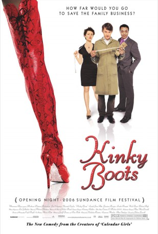
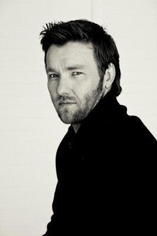
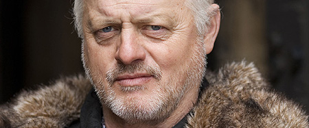
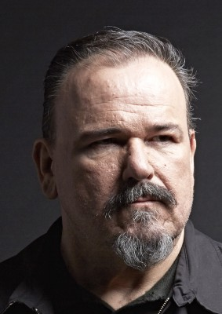
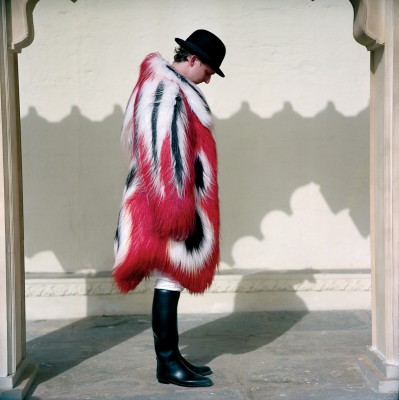
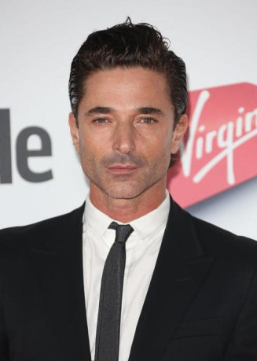
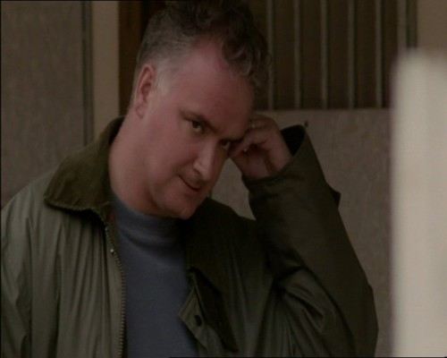
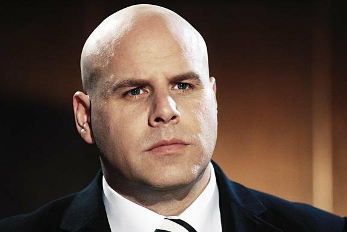

#7549 Kinky Boots - Man(n) trägt Stiefel
Alternativ: Kinky Boots
 
 IMDB-Wertung: 7.1 / 10
IMDB-Wertung: 7.1 / 10  Metascore: 0
Metascore: 0 
Charles Price may have grown up with his father in the family shoe business, but he never thought that he would take his father's place. Yet, the untimely death of his father places him in that position, only to learn that Price and Sons Shoes is failing. While in despair at his failed attempts to save the business, Charles has a chance encounter with the flamboyant drag queen cabaret singer, Lola. Her complaints about the inadequate footwear for her work combined with one of Charles' ex-employees, Lauren, leads to a suggestion to change the product to create a desperate chance to save the business: make men's fetish footwear. Lola is convinced to be their footwear designer and the transition begins. Now this disparate lot must struggle at this unorthodox idea while dealing with both the prejudice of the staff, Lola's discomfort in the small town and the selfish manipulation of Charles' greedy fiance who cannot see the greater good in Charles' dream.
Jahr: 2005
Dauer: 106 Minuten
FSK:
Land: USA Studio: MiramaxTonspuren: DTS - ,
Untertitel: Deutsch,
Auflösung: 1080p (1920x800) Größe: 6307 MB
Genre: Drama, Musik, Komödie
Regisseur: Julian Jarrold
Drehbuch: Geoff Deane
Soundtrack:
Darsteller:
-  Joel Edgerton als Charlie
 Chiwetel Ejiofor als Lola
Chiwetel Ejiofor als Lola- Sarah-Jane Potts als Lauren
 Nick Frost als Don
Nick Frost als Don- Linda Bassett als Melanie
- Jemima Rooper als Nicola
-  Robert Pugh als Harold Price
- Ewan Hooper als George
-  Stephen Marcus als Big Mike
- Kellie Bright als Jeannie
- Joanna Scanlan als Trish
-  Leo Bill als Harry Sampson
- Joe Grossi als Organiser
- Barry McCarthy als Bernie
-  Jake Canuso als Waiter
- Stephen Walker als Angel Boy - Milan Catwalk
-  Greg Bennett als Italian Paparazzi , uncredited
 Julie Eagleton als Guest at Milan Fashion Show , uncredited
Julie Eagleton als Guest at Milan Fashion Show , uncredited-  Christopher Fosh als Franko - Catwalk Organiser , uncredited
- Henry Martens als Restaurant Guest , uncredited
- Mona Hammond als Pat
- Geoffrey Streatfeild als Richard Bailey
- Gwenllian Davies als Mrs. Cobb
- Sebastian Hurst-Palmer als Young Charlie
- Courtney Phillips als Young Lola
- Ilario Bisi-Pedro als Lola's Dad
- Josh Cole als Tramp
- Paul Critoph als Lad 1
- Benjamin Wilkin als Lad 2
- Daniel Naprous als Lad 3
- David MacCreedy als Heckler
- Mark Haddon als Himself
- Sandra als Herself
- Fausto Danese als Angel Boy
- David Moulden als Angel Boy
- Carmello Segura als Angel Boy
- Gianni Dileo als Angel Boy
- Tom Sapsford als Angel Boy
- Karl Stevens als Angel Boy
- Marcos Parker-White als Angel Boy - Milan Catwalk
- Robert Nurse als Angel Boy - Milan Catwalk
- Michael Rolnick als Angel Boy - Milan Catwalk
- Robert Garrard als Angel Boy - Milan Catwalk
- David Oltan als Angel Boy - Milan Catwalk
- Simon Williams als Angel Boy - Milan Catwalk
- Rod Buchanan als Angel Boy - Milan Catwalk
- Anthony Palmer als Angel Boy - Milan Catwalk
- The Workforce of Tricker's Shoe Factory in Northampton als Themselves
 Lasco Atkins als Club punter , uncredited
Lasco Atkins als Club punter , uncredited- Dora Clouttick als Pole Dancer , uncredited
Datei: X:\2005(G-M)\Kinky Boots - Man(n) trägt Stiefel (2005, FSK, 1920x800).mkv seit 20.11.2017
Festplatte: HD 2005(G-Z)-2006(A-Z)
 Es gibt insgesamt 46 Filme in der Gruppe '2005(G-M)'
Es gibt insgesamt 46 Filme in der Gruppe '2005(G-M)'